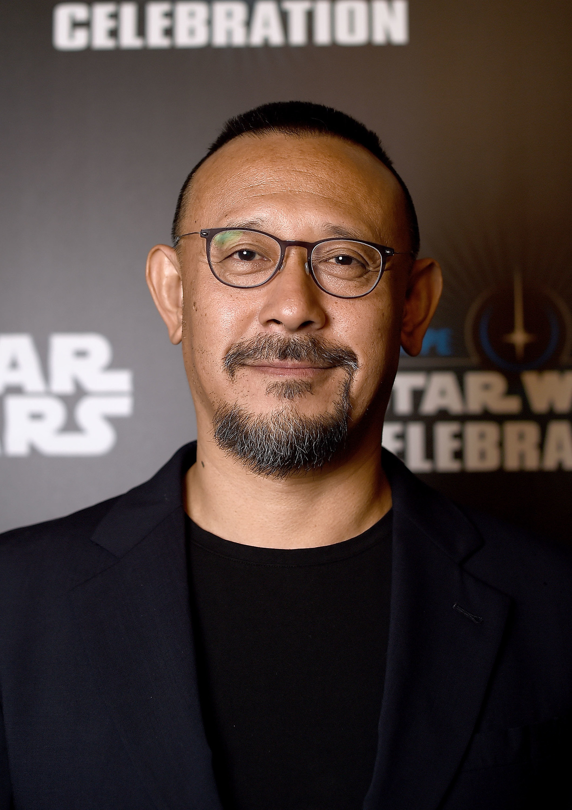

姜文，生于1963年1月，本名姜小军，男，河北唐山人，中国知名电影导演和演员。曾任第八、九、十届全国政协委员。入选中国电影百年名人堂，曾获法兰西文学艺术骑士勋章等荣誉。代表作《太阳照常升起》、《让子弹飞》等。 |
 |
1986年，姜文主演谢晋导演的电影《芙蓉镇》，1987年，主演张艺谋导演电影《红高粱》。1993年，主演由郑晓龙、冯小刚等制作的电视剧《北京人在纽约》，该剧在中国大陆大获成功，成为历史上收视率最高的中国电视剧之一。 1994年，姜文自编自导的电影《阳光灿烂的日子》在威尼斯电影节上映，并获得最佳男主角奖。本片根据北京作家王朔的小说《动物凶猛》改编，讲述了文化大革命时期一群大院子弟的经历。 1998年，姜文执导并主演了《鬼子来了》。该片反映了中华民国抗日战争时期日本侵略者与当地农民的关系。本片由于触及敏感的话题和非传统的表现手法，至今未能在中国大陆公映，但曾在CCTV-6播出过。 2007年，姜文自导自演了其第三部电影《太阳照常升起》。2010年，姜文与葛优、周润发合作，自导自演了电影《让子弹飞》，中国大陆票房接近7亿人民币，创下当时中国电影本土票房的纪录。《让子弹飞》改编自马识途的小说《夜谭十记》之《盗官记》。2018年7月13日，姜文的第六部导演作品《邪不压正》公映。 |